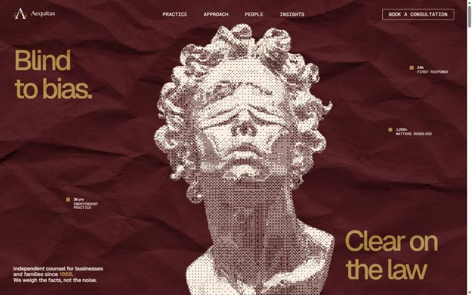
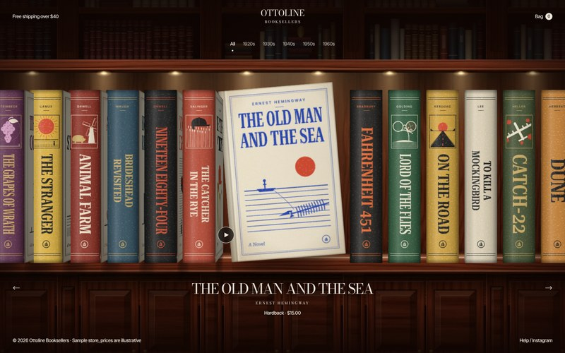

Concept sites and landing pages, each one live and built in plain HTML, CSS and WebGL.

Law-firm homepage with scroll-driven 3D: a dithered bust that morphs into scales and a gavel.

Bookshop concept with a 3D mahogany shelf, a book view on a table and a readable free sample.